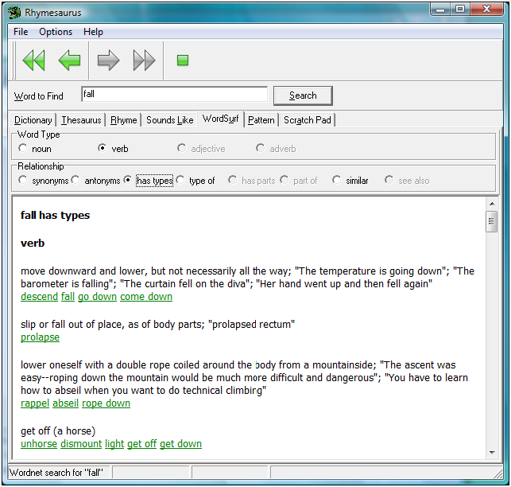

|
WordSurf |
Top Previous Next |
|
WordSurf is a powerful feature that combines the features of a dictionary and thesaurus, and has additional capabilities not found in either, such as finding the words that are parts of or types of the search word (e.g., finding types of mammals or parts of a locomotive).

When you search for a word with WordSurf, the program displays two additional groups of radio buttons (see the figure above): Word Type and Relationship.
Word Type can be Noun, Verb, Adjective, or Adverb. By default, when you search for a word with WordSurf, it chooses a Word Type of Noun, showing all found word types in the results windows. To select a different word type (e.g., Verbs), click on the appropriate radio button.
Relationship means the relationship of the result words to the search word. Relationships include:
To use WordSurf, type a search term in the Word to Search textbox, check the WordSurf radio button and click the Search button. Once the results appear, click on the Word Type and Relationship radio buttons as appropriate to find the types of related words you are searching for (e.g., synonyms, antonyms, parts, etc.)
To use WordSurf effectively, it is necessary to spend a little time "surfing" it to see what you can do with it. For example, if you want to find a list of musical instruments that are like a guitar, you might first search for the word "guitar", and then click on the Type Of radio button to see that it is a type of "stringed instrument". You could then click on "stringed instrument" and the Types radio button to see types of stringed instruments, which will include "banjo", "bowed stringed instrument", "chordophone", etc. |